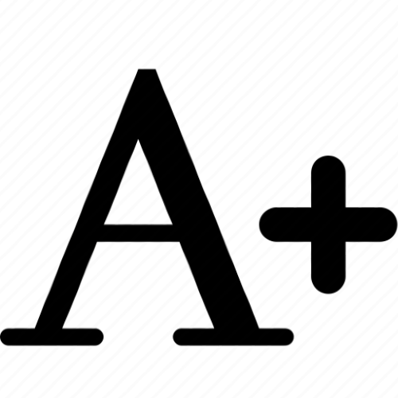
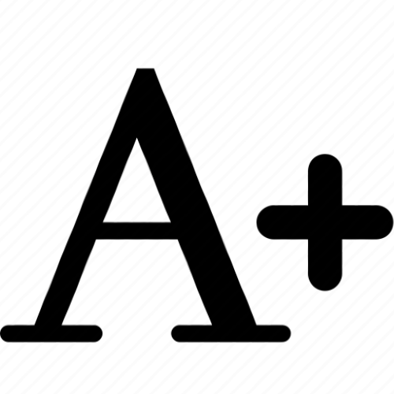

É fundamental em uma sociedade que a educação seja um direito para todos. Porém a educação tradicional abrange apenas parte da sociedade, enquanto isso, pessoas com necessidades especiais precisam de adaptações para que possam receber educação de qualidade. Esse site tem como objetivo esclarecer os principais fatores a ser melhorados e espalhar informações para todas as pessoas interessadas no assunto.
Uma das menções no artigo é Gonçalves e Festa, que ao realizarem uma pesquisa em uma escola de Curitiba-PR relataram a necessidade de adaptação nas aulas para alunos surdos, como o conhecimento dos professores em palavras simples que encaixam no contexto de escola, como “Escrever”, ”Chamada”, “Banheiro”, e por demais.
Outra referência é aos autores Silva e Silva, que apresentam um total de 8 opiniões e perspectivas diferentes ao assunto, vindas de profissionais da educação em uma escola pública de ensino médio.
Uma das menções no artigo é Gonçalves e Festa, que ao realizarem uma pesquisa em uma escola de Curitiba-PR relataram a necessidade de adaptação nas aulas para alunos surdos, como o conhecimento dos professores em palavras simples que encaixam no contexto de escola, como “Escrever”, ”Chamada”, “Banheiro”, e por demais.
Outra referência é aos autores Silva e Silva, que apresentam um total de 8 opiniões e perspectivas diferentes ao assunto, vindas de profissionais da educação em uma escola pública de ensino médio.